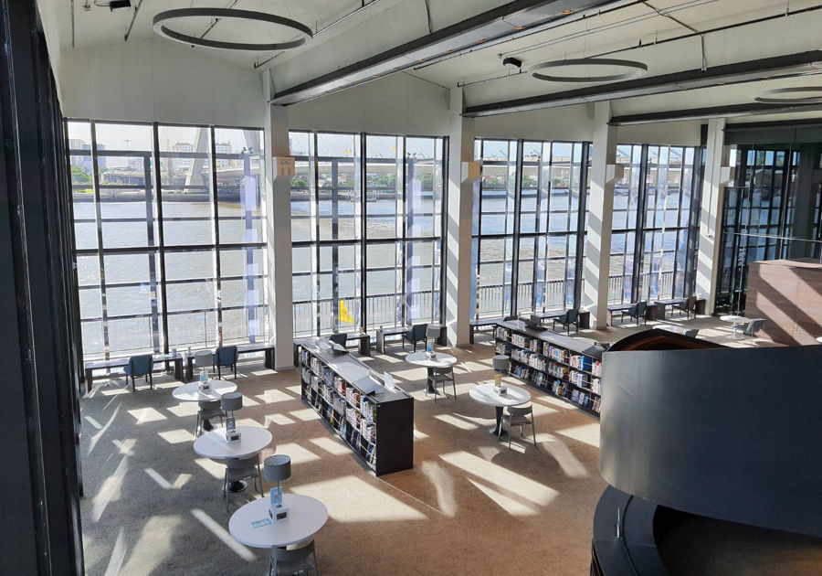

ห้องสมุดศูนย์การเรียนรู้ธนาคารแห่งประเทศไทย

ศูนย์การเรียนรู้ธนาคารแห่งประเทศไทย
เดิมเป็นอาคารโรงพิมพ์ธนบัตรแห่งแรกของประเทศไทย
ที่จัดตั้งขึ้นมาด้วยความสามารถของคนไทย
และยังเป็นสัญลักษณ์แสดงถึงความมุ่งมั่นด้านการพัฒนาวิทยาการของประเทศภายในโรงพิมพ์ธนบัตรมีห้องมั่นคงเดิมเก็บรักษาธนบัตรของประเทศ
ซึ่งเป็นเขตหวงห้ามเฉพาะ อาคารแห่งนี้จึงมีความสำคัญทางประวัติศาสตร์
มีอายุกว่า 50 ปี
แต่โครงสร้างอาคารยังมีความแข็งแรงและความงดงามทางสถาปัตยกรรม
ซึ่งมีความโดดเด่นที่หลังคาคอนกรีตทรงโค้ง
ซึ่งเหลืออยู่เพียงแห่งเดียวในประเทศไทย